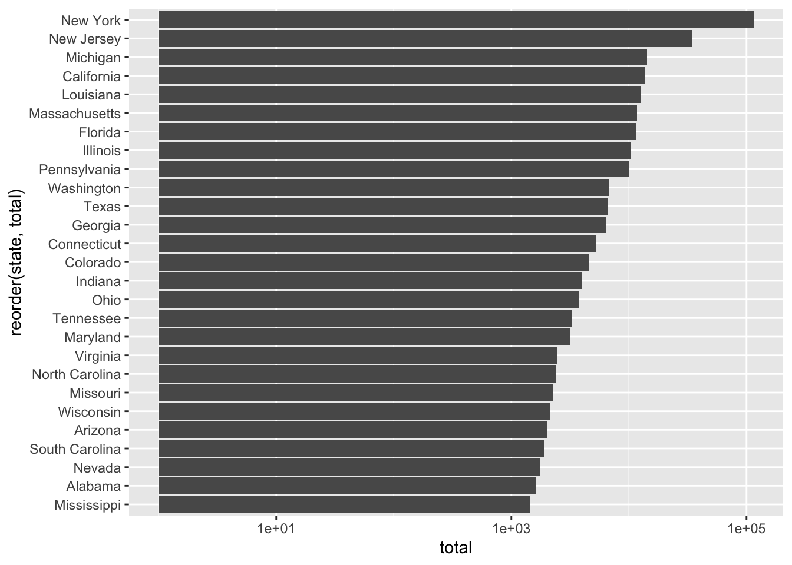
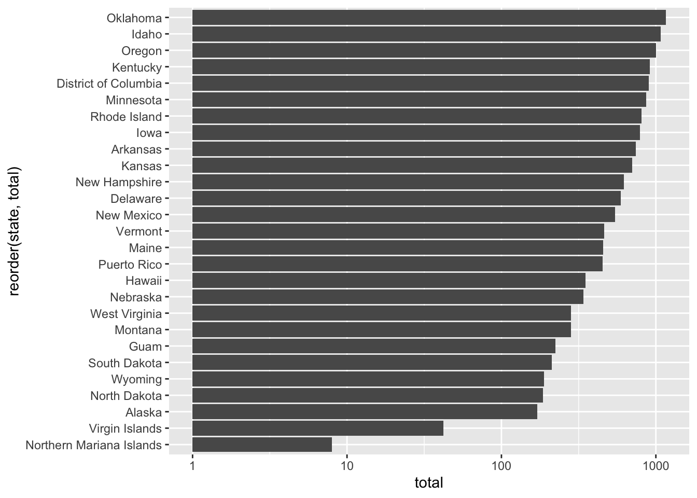
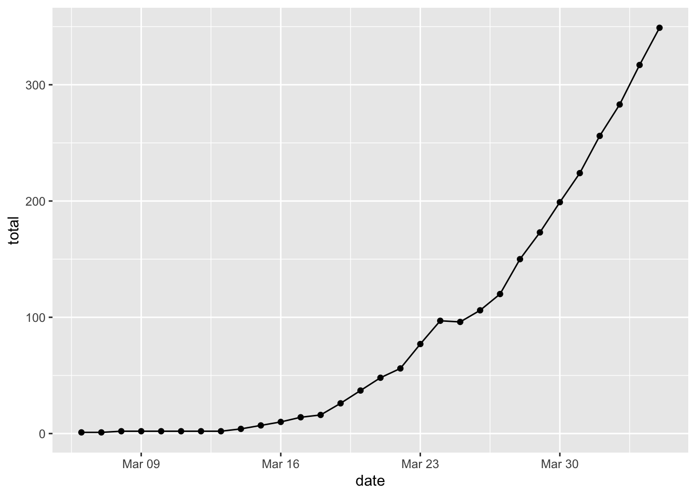
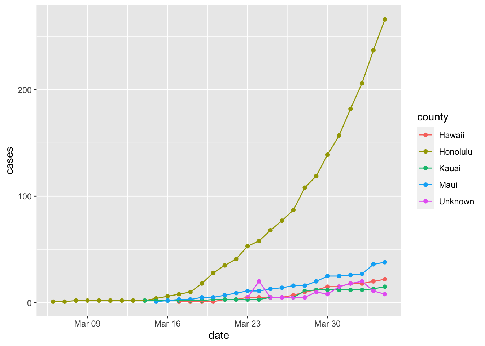
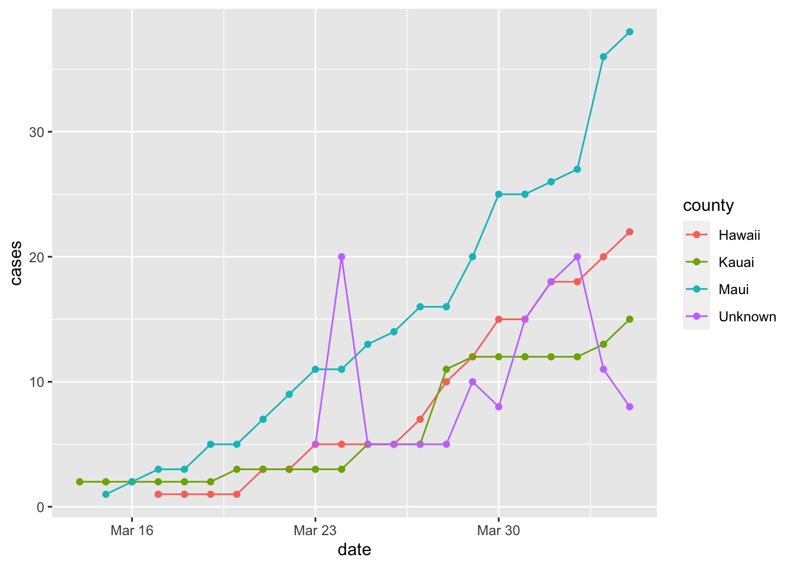
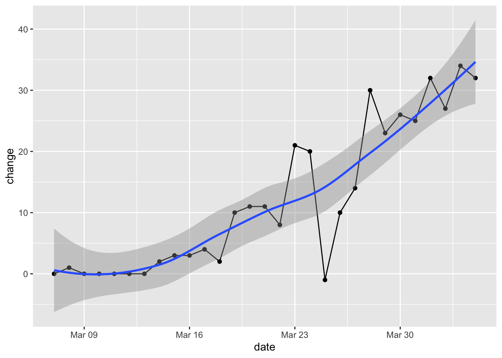

Coronavirus is all anyone can think about these days, and the New York Times has become a repository for USA case data for some reason. They have been publishing the data on Github for now.
library(dplyr)##
## Attaching package: 'dplyr'## The following objects are masked from 'package:stats':
##
## filter, lag## The following objects are masked from 'package:base':
##
## intersect, setdiff, setequal, unionlibrary(ggplot2)
library(scales)
covid <- readr::read_csv('https://raw.githubusercontent.com/nytimes/covid-19-data/master/us-counties.csv')## Parsed with column specification:
## cols(
## date = col_date(format = ""),
## county = col_character(),
## state = col_character(),
## fips = col_character(),
## cases = col_double(),
## deaths = col_double()
## )Data pull time
timestamp()## ##------ Sun Apr 5 21:13:00 2020 ------##glimpse(covid)## Observations: 33,251
## Variables: 6
## $ date <date> 2020-01-21, 2020-01-22, 2020-01-23, 2020-01-24, 2020-01-24, 2…
## $ county <chr> "Snohomish", "Snohomish", "Snohomish", "Cook", "Snohomish", "O…
## $ state <chr> "Washington", "Washington", "Washington", "Illinois", "Washing…
## $ fips <chr> "53061", "53061", "53061", "17031", "53061", "06059", "17031",…
## $ cases <dbl> 1, 1, 1, 1, 1, 1, 1, 1, 1, 1, 1, 1, 1, 1, 1, 1, 1, 1, 1, 1, 1,…
## $ deaths <dbl> 0, 0, 0, 0, 0, 0, 0, 0, 0, 0, 0, 0, 0, 0, 0, 0, 0, 0, 0, 0, 0,…covid$county <- factor(covid$county)
covid$state <- factor(covid$state)
covid$fips <- as.integer(covid$fips)
covid %>% filter(state == "Hawaii") %>% glimpse## Observations: 105
## Variables: 6
## $ date <date> 2020-03-06, 2020-03-07, 2020-03-08, 2020-03-09, 2020-03-10, 2…
## $ county <fct> Honolulu, Honolulu, Honolulu, Honolulu, Honolulu, Honolulu, Ho…
## $ state <fct> Hawaii, Hawaii, Hawaii, Hawaii, Hawaii, Hawaii, Hawaii, Hawaii…
## $ fips <int> 15003, 15003, 15003, 15003, 15003, 15003, 15003, 15003, 15003,…
## $ cases <dbl> 1, 1, 2, 2, 2, 2, 2, 2, 2, 2, 4, 2, 1, 6, 2, 2, 1, 8, 2, 3, 1,…
## $ deaths <dbl> 0, 0, 0, 0, 0, 0, 0, 0, 0, 0, 0, 0, 0, 0, 0, 0, 0, 0, 0, 0, 0,…Total Cases in USA as of 2020-04-04
Here is the total nationwide cases as of 2020-04-04.
x <- covid %>% filter(date == max(date)) %>% select(cases)
sum(x$cases)## [1] 310807Total Cases by State
covid %>% filter(date == max(date)) %>%
group_by(state) %>%
summarize(total = sum(cases)) %>%
arrange(-total)## # A tibble: 55 x 2
## state total
## <fct> <dbl>
## 1 New York 114996
## 2 New Jersey 34124
## 3 Michigan 14225
## 4 California 13796
## 5 Louisiana 12492
## 6 Massachusetts 11736
## 7 Florida 11537
## 8 Illinois 10358
## 9 Pennsylvania 10110
## 10 Washington 6788
## # … with 45 more rowscovid %>% filter(date == max(date)) %>%
group_by(state) %>%
summarize(total = sum(cases)) %>%
filter(total > median(total)) %>%
arrange(-total) %>%
ggplot(aes(x = reorder(state, total), y = total)) +
geom_bar(stat = 'identity') +
scale_y_continuous(trans=log10_trans()) +
coord_flip()
covid %>% filter(date == max(date)) %>%
group_by(state) %>%
summarize(total = sum(cases)) %>%
filter(total < median(total)) %>%
arrange(-total) %>%
ggplot(aes(x = reorder(state, total), y = total)) +
geom_bar(stat = 'identity') +
scale_y_continuous(trans=log10_trans()) +
coord_flip()
Total Cases in Hawaii
In Hawaii, the number of cases has been growing steadily.
covid %>% filter(state == "Hawaii") %>%
group_by(date) %>%
summarize(total = sum(cases)) %>%
arrange(-total)## # A tibble: 30 x 2
## date total
## <date> <dbl>
## 1 2020-04-04 349
## 2 2020-04-03 317
## 3 2020-04-02 283
## 4 2020-04-01 256
## 5 2020-03-31 224
## 6 2020-03-30 199
## 7 2020-03-29 173
## 8 2020-03-28 150
## 9 2020-03-27 120
## 10 2020-03-26 106
## # … with 20 more rowscovid %>% filter(state == "Hawaii") %>%
group_by(date) %>%
summarize(total = sum(cases)) %>%
ggplot(aes(x = date, y = total)) +
geom_point() +
geom_line()
Cases by County in Hawaii
Honolulu county has the most cases by far (as it has by far the largest population).
covid %>% filter(state == "Hawaii") %>%
ggplot(aes(x = date, y = cases, color = county)) +
geom_point() +
geom_line()
Cases by County other than Honolulu
To see the trend for the other counties, it is best to remove Honolulu County.
covid %>% filter(state == "Hawaii" & county != "Honolulu") %>%
ggplot(aes(x = date, y = cases, color = county)) +
geom_point() +
geom_line()
Change per Day
Here’s the change in our state per day. The growth rate in positive tests may still be accelerating.
covid %>% filter(state == "Hawaii") %>% group_by(date) %>%
summarize(total = sum(cases)) %>% mutate(day_before_total = lag(total)) %>%
mutate(change = total - day_before_total) %>%
filter(!is.na(change)) %>%
ggplot(aes(x = date, y = change)) +
geom_point() + geom_line() + geom_smooth()## `geom_smooth()` using method = 'loess' and formula 'y ~ x'